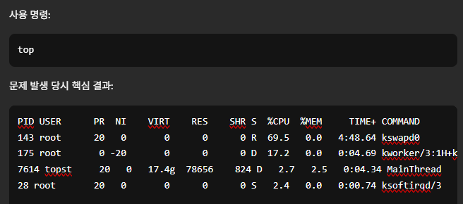
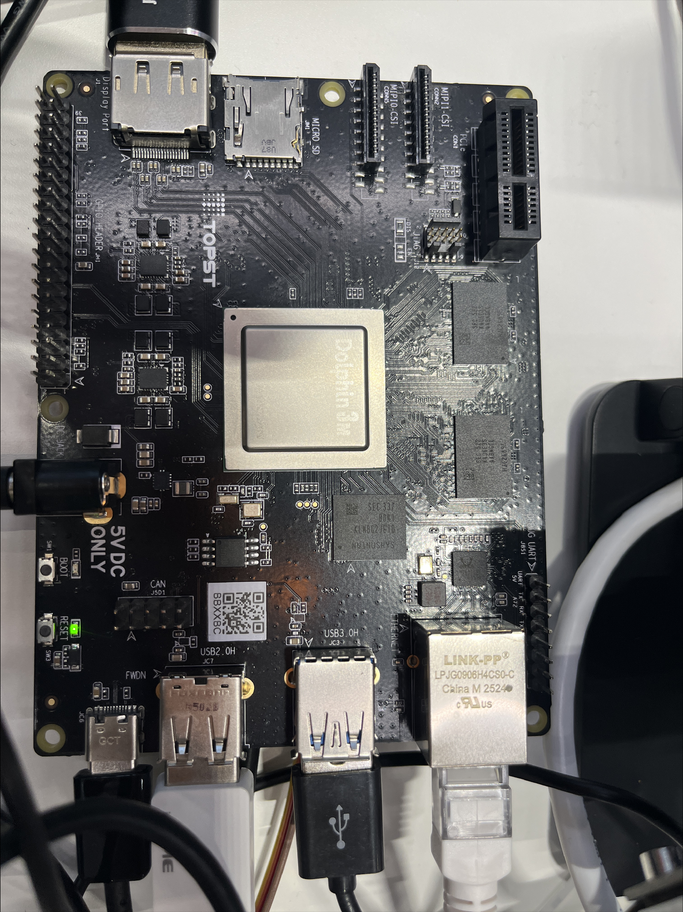
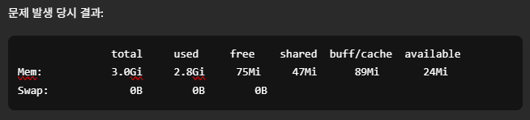
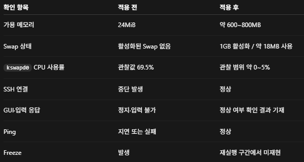

topkswapd0 CPU 69.5%
페이지 회수 작업에 부하가 집중되고 있을 가능성을 확인했습니다.
SYSTEM-LEVEL DEBUGGING · EMBEDDED LINUX
Telechips D3-G에서 Qt 애플리케이션을 개발하던 중 GUI, 입력 장치, 네트워크와 Serial Log가 함께 멈추는 현상을 재현하고 시스템 지표를 분석했습니다.

01
Qt 애플리케이션을 개발하거나 빌드하던 중 Remote SSH 연결이 반복적으로 끊겼습니다. 같은 시점에 Ubuntu GUI, 키보드·마우스, Ping 응답과 Serial Log도 함께 멈춰 단순 네트워크 장애보다 시스템 전체의 문제로 조사 범위를 넓혔습니다.
02
장애 재현, 이전 부팅의 Kernel Log와 Serial Log 확인, 시스템 자원 및 프로세스 분석, Swap 적용 후 동일 작업 재실행과 상태 비교를 수행했습니다.
03
EVIDENCE
한 가지 명령의 결과만으로 결론을 내리지 않고 여러 지표를 함께 확인했습니다.

페이지 회수 작업에 부하가 집중되고 있을 가능성을 확인했습니다.

추가 작업을 수용할 메모리 여유가 거의 없었습니다.
PROCESS ANALYSIS
Windows PC에서 접속하더라도 VS Code Server와 확장 프로세스는 D3-G에서 실행됐습니다. Pylance와 ExtensionHost의 RSS가 각각 약 610MB와 497MB로 관찰되어, Ubuntu GUI와 Qt 작업뿐 아니라 개발 환경 전체의 메모리 부담을 원인 가설에 포함했습니다.
RESULT
물리 RAM을 증설할 수 없는 조건에서 Swap을 활성화하고 같은 Qt 작업을 다시 실행했습니다.

판단 범위 같은 조건에서 다시 실행한 결과는 메모리 압박이 장애에 관여했다는 가설을 뒷받침합니다. 장시간·다회 반복 확인 전에는 단일 원인으로 확정하지 않습니다.
PLATFORM INSIGHT